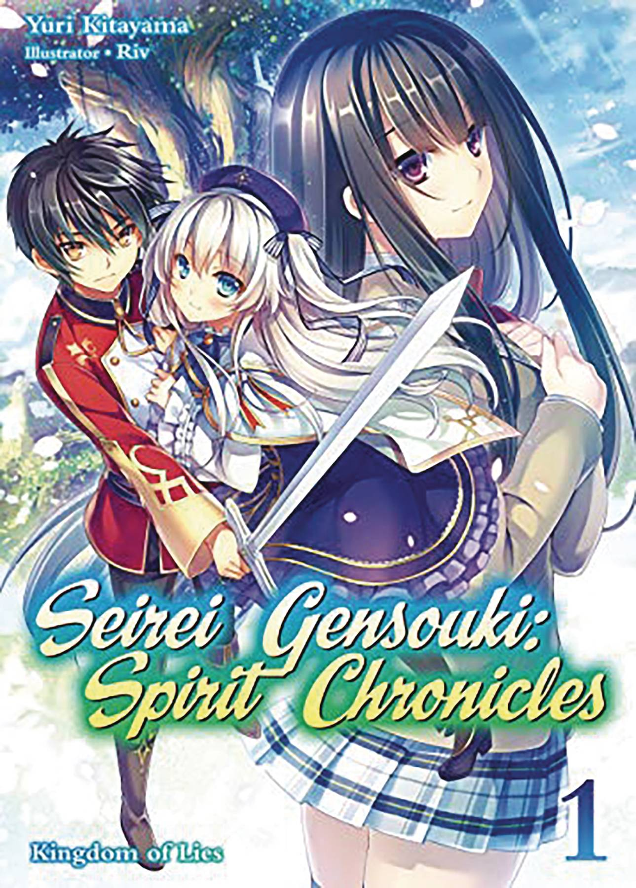

✦ UMA PLATAFORMA DE HISTÓRIASEntre em mundos
Entre em mundos
que não existem.
Descubra novels, acompanhe cada volume como uma história independente e encontre sua próxima jornada favorita.
07 volumes∞ histórias por vir24/7 leitura

NOVO NO NOVELHUBSEIREI GENSOUKIVolume 1 · Prólogo disponívelUma história para começar
Mais lidas agora
O ranking estará disponível em breve.
Volumes organizados.
Leitura sem pressa.
Cada volume tem seu próprio espaço, sua capa e seus capítulos. Abra um livro, encontre seu ritmo e deixe a história fazer o resto.
Ver todos os volumes →